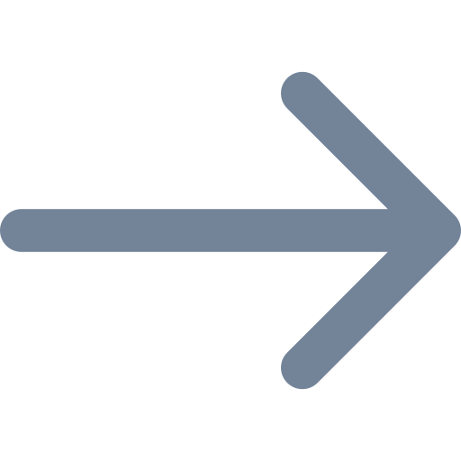

Gustavo Costa’s Profile
Multingual Hyphenation, jQuery.nicescroll and Materialize Template
მრავალენოვანი ჰიპენტაცია, jQuery.nicescroll და Materialize-ის გვერდის შაბლონი
-
English
Hi, people! My name is Gustavo Costa. I am from Aparecida, a city in the northeastern state of São Paulo, in the suotheastern Brazil. Aparecida is very famous city for the visits of the popes John Paul II, Benedict XVI and Francis I. I am years old and a deaf-born polyglot programmer. I am also a freelance graphic designer, translator, typodesigner and web designer. I am studying Computer Science in the UNISAL (Salesian university of São Paulo). I have already been graduated in Management and in Marketing and Propaganda.
As I am a polyglot, I know 12 languages – Brazilian Sign language (Libras), Catalan, Dutch, English, French, Georgian, German, Greek, Italian, Portuguese, Romanian and Spanish. I am fluent in English, French, Italian, Libras, Portuguese and Spanish. I am between A2 and B1 in Catalan, Georgian, Greek and Romanian because I am still studying these languages. I am between B1 and B2 in Dutch and German, but I also am still studying them. I am A2 in Japanese when I studied in 2008, but I forgot all. I know only some hiragana, kanji and katakana.
My favourite languages are Dutch, French, German, Georgian, Greek and Japanese because I like difficult languages. I do not find Georgian and Greek difficult. I intend to study other several languages as I can. I was always autodidact and began to study language since 9 years old.
I also know markup and programming languages. I know AppleScript, C, C++, C#, Common Lisp, Java, JavaScript, Less, PHP, Prolog, Python, SASS, SCSS, Shell Script, Swift. I am still studying all these languages, along with other programming languages. I am an user of Android, iOS, Linux and macOS. My favourite Linux distributions are Elementary OS, Linux Mint, Manjaro, Porteus and Ubuntu.
I love sports. I play only bodybuiding now. I played judo and swimming. I am a proud judoka and swimmer. I was white belt and won three judo gold medals. I work out for 2 years.
My favourite foods are apples, bananas, cashew nut, grapes, raisins, strawberries, wholemeal toast and whole peanut paste. My favourite drinks are café au lait, cappuccino, coffee, grape, orange and passion fruit juices. I also eat Japanese food.
I have several hobbies. My hobbies:
-  Collecting the things of art deco, graphic designer, icons, typefaces and didatic and grammar books
- Going to shopping mall for buying elegant clothes and eating the Japanese food
- Joking with the programming languages codes
- Joking with the terminal of Linux and macOS
- Keeping myself updated about the astronomy and technology (computer, artificial intelligence, programing language, robots, smartphones, etc.)
- Learning many new foreign languages
- Studying, reading and researching innumerable subjects of both exact and human sciences – aerospace engineering, computer engineering, software engineering, astronomy, astrophysics, biology, design, geography, history, linguistics, management, maths, philosophy, photography, physics, rights, sociology and typography.
- Training bodybuilding, judo and swimming
- Visiting encyclopædias to get much knowledge
- Watching scifi carton, films and series
-
ქართული
გამარჯობა ხალხო! ჩემი სახელი არის გუშტავ კოსტა (Gustavo Costa). მე ვარ აპარესიდიდან (Aparecida), ქალაქი სან პაულო-ის ჩრდილო აღმოსავლური შტატი, ბრაზილიის სამხრეთ აღმოსავლური. აპარესიდა არის ძალიან ცნობილი ქალაქი პაპების ვიზიტებისთვის — ჯონ პოლ II, ბენედიქტ XVI და ფრენსის I ვიზიტებისთვის. მე წლის ვარ და ყრუ პოლიგლოტი პროგრამისტი. მე ასევე ვარ გრაფიკული დიზაინერი, მთარგმნელი, ფონტი დიზაინერი და ვებ დიზაინერი. მე ინფორმატიკა UNISAL-ში (სან პაულო-ის დონ ბოსკო-ის უნივერსიტეტი) ვსწავლობ. მე უკვე უმაღლესდამთავრებული მენეჯმენტიში და მარკეტინგიში და პროპაგანდა.
როგორც მე ვარ პოლიგლოტი, მე ვიცი 12 ენები – ბრაზილიური ჟესტების ენა (Libras), ბერძნული, გერმანული, ესპანური, ინგლისური, იტალიური, კატალანური, პორტუგალიური, რუმინულიფრანგული, ქართული და ჰოლანდიური. მე ვარ მოწინავე ინგლისურად, ფრანგულად, იტალიურად, Libras-ად, პორტუგალიურად და ესპანურად. მე ვარ A2 და B1 შორის კატალონურ, ქართულ, ბერძნულ და რუმინულ ენებზე, რადგან ჯერ კიდევ ვსწავლობ ამ ენებს. მე ვარ B1 და B2 შორის ჰოლანდიურ და გერმანულ ენაზე, მაგრამ აგრეთვე ჯერ ვსწავლობ მათ. მე ვარ A2 იაპონიური ენაზე, როდესაც 2008 წელს სწავლობდა, მაგრამ დამავიწყდა ყველა. ვიცი მხოლოდ რამდენიმე ჰირაგანა, კანჯის და კატაკანა.
ჩემი ფავორიტი ენები ჰოლანდიური, ფრანგული, გერმანული, ქართული, ბერძნული და იაპონური, რადგან მე მიყვარს ძნელი ენები. ქართველი და ბერძენი ვერ არიან ძნელი ჩემთვის. მე ვაპირებ სხვა რამდენიმე ენები შესწავლას. მე ყოველთვის ავტოდიდაქტი და 9 წლისდან ენები სწავლა დავიწყე.
მე ასევე ვიცი მონიშვნიისა და პროგრამირების ენები. მე ვიცი AppleScript, C, C ++, C #, Common Lisp, Java, JavaScript, Less, PHP, Prolog, Python, SASS, SCSS, Shell Script და Swift. მე ჯერ კიდევ სწავლობ ყველა ამ ენები, სხვა პროგრამირების ენებთან ერთად. მე ვარ Android, iOS, Linux და macOS. ჩემი ფავორიტი Linux დისტრიბუტივები არიან Elementary OS, Linux Mint, Manjaro, Porteus და Ubuntu.
მე მიყვარს სპორტები. ახლა მე მხოლოდ ვარგისობა ვარჯიში. მე ძიუდო და ცურვა ივარჯიშდა. მე ვარ ამაყი ძიუდოისტი და მოცურავე. მე ვიყავი თეთრი ქამარი და სამი ძიუდოს ოქროს მედალი მოიგო. მე 2 წელი ივარჯიშდა.
ჩემი ფავორიტი საკვები არის ვაშლი, ბანანი, აკაჟუები, ყურძნები, ქიშმიშები, მარწყვები, მთელი გახუხული პური და მთელი არაქისი პასტა. ჩემი ფავორიტი სასმელები café au lait, cappuccino, ყავა, ყურძენი, ფორთოხალი და მარაკუია წვენები. ასევე იაპონიის საკვები ვჭამ.
მე მაქვს რამდენიმე ჰობი. ჩემი ჰობი:
- შეგროვება art deco, გრაფიკული დიზაინერი, ხატები, ფონტები და დიდაქტიკური და გრამატიკა წიგნების ნივთები.
- წასვლა სავაჭრო ცენტრიკენ ელეგანტური ტანსაცმლი ყიდვისთვის და იაპონური საკვები ჭამისთვის
- პროგრამირების ენების კოდებსთან ხუმრობა
- Linux-ის და macOS-ის ტერმინალსთან ხუმრობა
- ასტრონომიასაზე და ტექნოლოგიაზე (კომპიუტერი, ხელოვნური ინტელექტი, პროგრამირების ენა, რობოტები, სმარტფონები და ა.შ.) შენახვა ჩემ თავს განახლებული.
- სწავლა ბევრი ახალი უცხო ენები
- ზუსტი და ჰუმანიტარული მეცნიერებების მრავალრიცხოვანი თემები სწავლა, კითხვა და კვლევა — აეროკოსმოსური საინჟინრო, ასტრონომია, ასტროფიზიკა, ბიოლოგია, გამომთვლელი ტექნიკა, გეოგრაფია, ისტორია, ლინგვისტიკა, მათემატიკა, მენეჯმენტი, მხატვრული გაფორმება, პროგრამული საინჟინრო, სამართალი, სოციოლოგია, ტიპოგრაფია, ფიზიკა, ფილოსოფია და ფოტოგრაფია.
- ფიტნეს ვარჯიში, ძიუდოს და ცურვა
- ნახვა ენციკლოპედიები და მიღწევა ბევრი ცოდნა
- ყურება სამეცნიერო ფანტასტიკის მულტფილმი, ფილმები და სერიები
-
Français
Salut, gens ! Je m’appelle Gustavo Costa. Je suis d’Aparecida, la ville dans le nord-est de l’état de São Paulo, dans le sud-est du Brésil. Aparecida est une ville très connue pour les visites des papes Jean Paul IIe, Benoît XVIe et François Ier. J’ai ans et un programmeur polyglotte sourd de naissance. Je suis aussi un indépendant déssinateur graphique, traducteur, déssinateur de polices et web designer. J’étudie l’Informatique chez l’UNISAL (Université Salésienne de São Paulo). Je déjà me suis gradué en Management et Marketing et Propaganda.
Comme je suis un polyglotte, je sais 12 langues — allemand, anglais, catalan, espagnol, français, géorgien, grec, italien, langue de signes brésilienne (Libras), portugais et roumain. Je suis avancé en anglais, espagnol, français, italien, Libras et portugais. Je suis entre A2 et B1 en catalan, géorgien, grec et roumain parce que je suis toujours encore en train d'étudier ces langues. Je suis entre B1 et B2 en allemand et en néerlandais, mais je les étudie encore. Je suis A2 en japonais quand j’ai étudié en 2008, mais j’ai tout oublié. Je connais seulement quelque hiragana, kanji et katakana .
Mes langues préférées sont allemand, français, géorgien, grec, japonais et néerlandais parce que j’aime les langues difficiles. Je ne trouve pas difficiles le géorgien et le grec. J’ai l’intention d’étudier d’autres langues s’il m’est possible. J'ai toujours été autodidacte et j’ai commencé à étudier le langage depuis l’âge de 9 ans.
Je connais également les langages de balisage et de programmation. Je connais AppleScript, C, C ++, C #, Common Lisp, Java, JavaScript, Less, PHP, Prolog, Python, SASS, SCSS, Shell Script et Swift. J’étudie toujours toutes ces langues, ainsi que d’autres langages de programmation. Je suis un utilisateur d’Android, iOS, Linux et macOS. Mes distributions de Linux préférées sont Elementary OS, Linux Mint, Manjaro, Porteus et Ubuntu.
J’aime les sports. Je ne m’entrîne que du bodybuilding maintenant. J’ai joué au judo et à la natation. Je suis fier d’être judoka et nageur. J’étais une ceinture blanche et j’ai gagné trois médailles d’or de judo. Je m’entraîne pendant 2 ans.
Mes aliments préférés sont les bananes, les fraises, les noix de cajou, les pommes, les raisins, les raisins secs, les toasts et la pâte d’arachide pleine. Mes boissons préférées sont café au lait, cappuccino , les jus de raisin, d’orange et du fruit de la passion. Je mange aussi de la nourriture japonaise.
J’ai plusieurs passe-temps. Mes passe-temps :
- Collecter des objets d’art déco, graphiste, icônes, caractères et livres didactiques et de grammaire des langues étrangères
- Aller au centre commercial pour acheter des vêtements élégants et manger de la nourriture japonaise
- Jouer avec les codes de langues de programmation
- Jouer avec le terminal de Linux et macOS
- M’être mis au courant de l'astronomie et de la technologie (informatique, intelligence artificielle, langues de programmation, robots, smartphones, etc.)
- Apprendre plusieurs langues étrangères
- Étuider, lire et rechercher d’innombrables sujets de deux sciences éxactes et humaines — astronomie, astrophysique, biologie, design [graphique], droit, géographie, histoire, ingénierie aérospatiale, ingénierie informatique, ingénierie logicielle, linguistique, management, mathématiques, philosophie, photographie, physique, sociologie et typographie.
- M’entraîner le bodybuilding, judo et natation
- Visiter les encyclopédies pour accomplir beaucoup de connaissance
- Regarder des dessins animés, des films et des séries télévisés de science fiction
Bugs, details and versions of this template:
Bugs
Unfortuantely, the JavaScript file jquery.nicescroll bugged the Materialize popup collpasible list – when you open one of three lists, the part of the text will be cut in the end. The hyphenation doesn't work in the collection ul.
Details
I updated the new version of Hyphenator.js for making Georgian available for the hyphenation and I fixed a bug of Levan Shoshiashvili's Javascript pattern fil ka.js due to the bug of the compressor of Hyphenator.
Versions
Browser: Google Chrome 60.0.3112.90
Hyphenator: 5.2.0
jquery.nicescroll: 3.7.4
jquery: 3.2.1
Materialize: 0.100.1